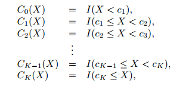
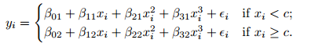
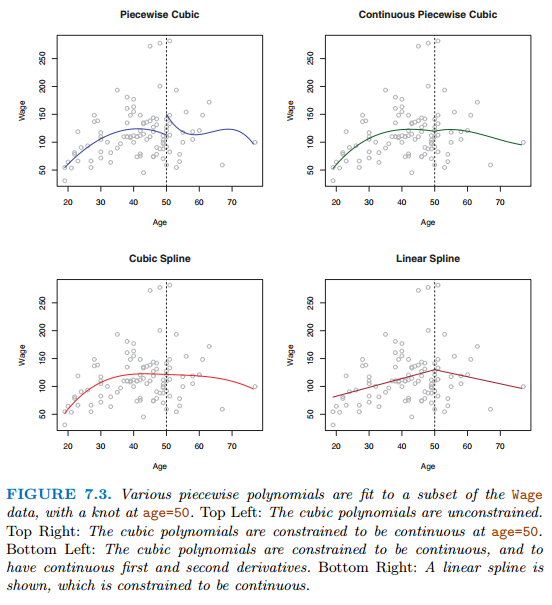
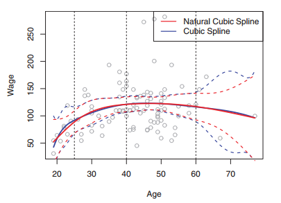

Ở các phần trước, ta đã đề cập đến các kỹ thuật phân tích có tính ứng dụng thực tiễn cao như linear regression, logistic regression hay tree based methods. Ở chương này, ta sẽ đề cập nhiều hơn đến các mô hình mở rộng của regression và sử dụng các mô hình phi tuyến, bao gồm các nhóm sau:
Polynomial regression: Hàm bậc cao X, \(X^2\), \(X^3\)
Step functions: Chia biến thành k miền khác nhau, xây dựng mô hình đơn giản ứng với k miền đó.
Regression splines: Chia biến y thành k miền khác nhau, với mỗi miền sẽ xây dựng một polynomial regression sao cho biến y liên tục trên toàn miền
Smoothing splines: Tương tự như regression splines, nhưng thêm điều kiện tối ưu hóa tổng bình phương sai số trên toàn miền.
Local regression: Tương tự như splines nhưng cho phép các miền của biến y có vùng chồng lấn.
Các phương pháp trên cho phép xây dựng mô hình với 1 biến độc lập (1 predictor). Với mô hình đa biến, ta có thể sử dụng mô hình GAM Generalized additive models
Call:
lm(formula = wage ~ poly(age, 4), data = Wage)
Residuals:
Min 1Q Median 3Q Max
-98.707 -24.626 -4.993 15.217 203.693
Coefficients:
Estimate Std. Error t value Pr(>|t|)
(Intercept) 111.7036 0.7287 153.283 < 2e-16 ***
poly(age, 4)1 447.0679 39.9148 11.201 < 2e-16 ***
poly(age, 4)2 -478.3158 39.9148 -11.983 < 2e-16 ***
poly(age, 4)3 125.5217 39.9148 3.145 0.00168 **
poly(age, 4)4 -77.9112 39.9148 -1.952 0.05104 .
---
Signif. codes: 0 '***' 0.001 '**' 0.01 '*' 0.05 '.' 0.1 ' ' 1
Residual standard error: 39.91 on 2995 degrees of freedom
Multiple R-squared: 0.08626, Adjusted R-squared: 0.08504
F-statistic: 70.69 on 4 and 2995 DF, p-value: < 2.2e-16
26.3 Step functions
Step function còn được gọi là piece wise constant regression. Thuật toán này chia biến y thành các k khu vực (bins), tìm hằng số không đổi \(C\) cho mỗi bin và thay đổi các biến liên tục thành các biến category có sắp xếp như sau.

Lưu ý: Các hàm polynomial và step function (còn gọi là piecewise constant function) là dạng hàm đặc biệt của basis function như sau.
Gọi \(b_i(.)\) là hàm đã biết trước của \(X\), ta có:
Đối với step function: \(b_j(x_i)= I(c_j \leq x_i \prec_{j+1})\)
26.4 Regression splines
Hàm piecewise polynomial chia X thành nhiều nhóm, và xây dựng mô hình hàm bậc cao cho từng nhóm. Điểm mà các hệ số tương quan của X thay đổi giữa các khu vực gọi là knots

Để các hàm splines được liên tục, ta giải hệ phương trình để tất cả các điểm trên đồ thị, đạo hàm bậc 1 và 2 đều liên tục.

Lưu ý:
Natural splines là phương trình của cubic splines nhưng thêm điều kiện là phương trình phải tuyến tính (linear) tại các điểm biên (boundary constraints)

Để lựa chọn số lượng knots K, ta sử dụng Cross-Validation. MSE nhỏ nhất sẽ được sử dụng
So sánh với polynomial: Regression splines có những ưu điểm sau so với polynomial như sau:
Cho phép thêm các knots tại các khu vực mà hệ số tương quan thay đổi nhanh
Khi xây dựng mô hình, ta muốn xây dựng một hàm f(x) sao cho RSS là nhỏ nhất. Tuy nhiên, ta có thể biến RSS có giá trị bằng 0 bằng cách chọn f(x) sao cho f(x) bao quanh tất cả các giá trị của y.
Do đó, ta muốn xây dựng đường f(x) sao cho RSS nhỏ nhất đồng thời smooth.
\(\sum_{i=1}^n(y_i-g(x_i))^2\) được gọi là loss function, mục tiêu để phương trình lý thuyết và thực tế gần nhau nhất
\(\lambda\int g^{''}(t)^2dt\) được gọi là penalty của hàm lý thuyết.
\(g^{'}\) đo lường độ dốc của các hệ số trong phương trình tại điểm t,
\(g^{''}\) đo lường độ thay đổi của các hệ số trong phương trình tại điểm t. Tích phân của \(g^{''}\) đo lường tổng các sự thay đổi của các hệ số trên toàn miền dữ liệu tính toán.
Nếu hệ số \(\beta\) trên toàn miền không đổi, phần penalty này sẽ có giá trị bằng 0
\(\lambda\) càng lớn, phương trình sẽ càng trơn (smooth). Nếu \(\lambda = 0\), phương trình sẽ là các đường nối các điểm \(y_i\). Nếu \(\lambda \rightarrow \infty\), phương trình sẽ là 1 đường thẳng và trở về OLS
Lưu ý: Hàm \(g(x)\) thỏa mãn các điều kiện trên là đường natural cubic splines với các knots là tất cả các điểm riêng biệt \(x_i\)
26.6 Local regression
Local regression (loess) là phương pháp xây một đường trơn (smoother) bằng cách xây dựng mô hình OLS đơn giản có trọng số. Dữ liệu được sử dụng xây dựng mô hình là các quan sát lân cận điểm xây dựng mô hình.
Ví dụ gần nhất với local regression là mô hình moving average trong chuỗi thời gian. Trong đó, kết quả của đường làm trơn \(y\) là giá trị trung bình của \(k\) quan sát trước và sau thời điểm \(t_0\).
Xác định tham số \(s\) cua mô hình. \(s\) có giá trị trong khoảng 0-1. Ví dụ \(s=0.3\), mô hình sẽ lấy 30% quan sát gần nhất với điểm \(x_0\) để xây dựng mô hình. Tham số \(s\) được gọi là span parameter. Số lượng quan sát để xây dựng local regression tại mỗi điểm là \(k\)
Xác định trọng số cho mỗi điểm trong dữ liệu xây mô hình như sau
Xác định khoảng cách đã chuẩn hóa từ điểm cần ước lượng \(d_i=\frac{x_i-x_0}{|max(x_k) - x_0|}\)
Xác định trọng số \(w_i = (1-d_i^3)^3\)
Xây dựng mô hình hồi quy có trọng số bằng cách tối ưu hóa hàm loss sau.
Mô hình GAM là mô hình mở rộng của các mô hình phía trên vaf dựa trên 2 giả định:
Biến cần dự báo \(y\) có thể có mối quan hệ tuyến tính hoặc phi tuyến tính với các biến độc lập
Ta có thể cùng lúc xây dựng mô hình giữa biến phụ thuộc \(y\) với từng biến độc lập \(x_i\) và có thể dự báo \(y\) bằng cách cộng các mô hình vừa xây dựng.
Ý tưởng của mô hình GAM có thể được minh họa qua biểu đồ sau.
Phản ánh được mối quan hệ cả phi tuyến và phi tuyến giữa các biến
Hỗ trợ regularization
Nhược điểm: Giả định của GAM là các yếu tố của từng biến là có thể cộng được. Tuy nhiên, điều này không phải lúc nào cũng đúng trong thực tế. Do đó, với mô hình nhiều biến, hiệu ứng tương tác giữa các biến sẽ không được thể hiện rõ trong GAM
Lưu ý: GAM cũng có thể được dùng cho logistic như sau: